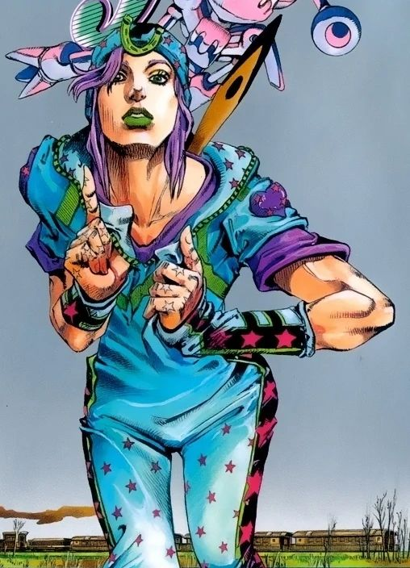

| Portrait |
Name |
Current Age |
Psychological profile |
Stand Name (if applicable) |
Abilities/Powers |
 |
Johnathan Joestar |
20 |
Caring, compasionate, gentleman of honor |
No stand ability, uses Hamon |
A breathing technique that excells at improving personal strength and focus and is developed for fighting vampires |
 |
Joseph Joestar |
91 |
Selfish, uncharismatic, tactful and despite being rude, has his heart in the right place and fights for justice |
Hermit purple, Hamon |
A spiked thread that can be used to find a location or grab onto objects |
|
Jotaro Kujo |
40 |
Reserved, non responsive to most external stimuli, stoic and calm in a majority of situations regardless of stress levels |
Star Platinum |
Punches things (with extreme unprecidented speed and strength) then eventually freezes time to punch things even more |
 |
Josuke Higashikata |
16 |
Caring and friendly, wants everyone to be happy and get along (extreme uncontrolable bouts of violence and rage when his hair style is insulted in the slightest) |
Shinning Diamond AKA Crazy Diamond (the translations are debateable) |
Can revert anything organic or inorganic back to it's original form, including healing injured people (He cannot heal himself or bring someone back from the dead) |
|
Giorno Giovanni |
26 |
Elitist, but not in a supremacist sense, his ambition combined with his moral compass creates a personal sense of duty and responsibility to clean the Mafias of Venice to protect the children |
Golden Wind |
The power to create life from any inorganic object, can create whole living animals or can repair peices of his own broken body or teamates', eventually evolves into a form that can remove attackers from reality entirely and move them to a reality where they experience infinite violent deaths |
|
Jolyne Cujoh |
19 |
A childlike teen whom is thrown into adulthood and forced to mature rapidly into a morally just woman who has a personal vendetta to achieve |
Stone Free |
Can turn her body into string or create string, combined with her inteligence she can create intricate traps and safety nets for whatever situation |
|  |
Johnny Joestar |
29 |
A parapalegic who wants to enter in a horse race across the country to find his purpose, shy at first and untrusting |
Tusk |
Has four evolutionary phases starting with the ability for Johnny to turn his fingernails essentially into spinning bullets and fires them off at high velocity, at full evolution these spinning "nail bullets" obtain the ability to tear through reality itself |
|
Josuke Higashikata (preferred) |
19 |
Wakes up with complete amnesia of his entire life and is forced to rediscover who he is and is "reborn" as a new person through this trial, kind and untrusting, ambitious to get to the bottom of anything that doesn't feel right to him |
Soft and Wet |
Creates bubbles that can be used to remove sound, friction, or materials from surrounding areas, the insides of the bubbles are a material not of this world |